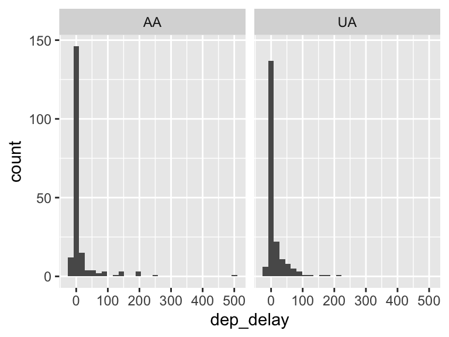
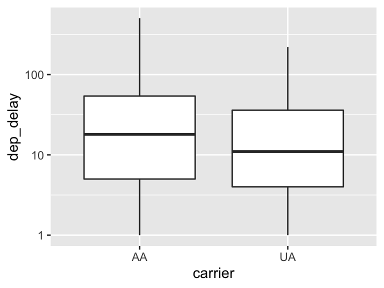
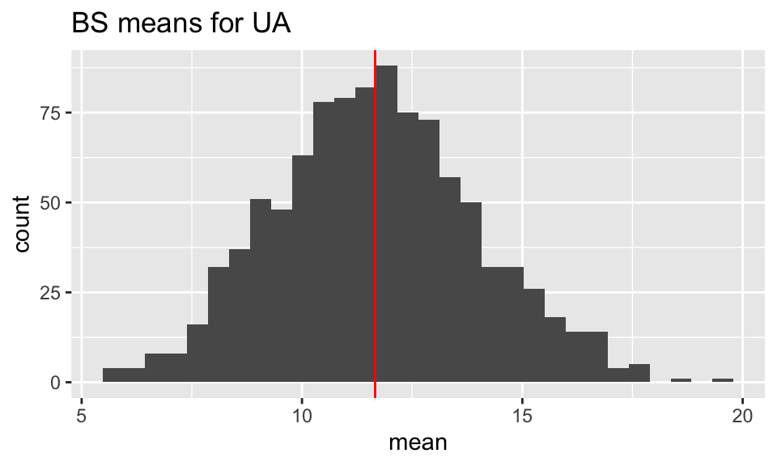
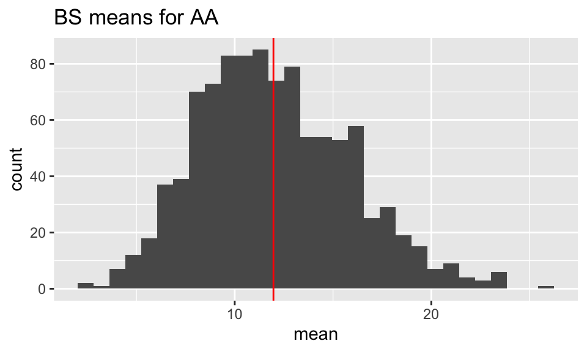

Math 152 - Statistical Theory - Homework 6
Important Note:
You should work to turn in assignments that are clear, communicative, and concise. Part of what you need to do is not print pages and pages of output. Additionally, you should remove these exact sentences and the information about HW scoring below.
Click on the Knit to PDF icon at the top of R Studio to run the R code and create a PDF document simultaneously. [PDF will only work if either (1) you are using R on the network, or (2) you have LaTeX installed on your computer. Lightweight LaTeX installation here: https://yihui.name/tinytex/]
Either use the college’s RStudio server (https://rstudio.pomona.edu/) or install R and R Studio on to your personal computer. See: https://m152-stat-theory.netlify.app/syllabus.html for resources.
Assignment
Goals:
In this assignment, the fun will include:
- finding statistics with t distributions
- generating bootstrap distributions
Book problems
- Feel free to do the book problems with a pencil or in LaTeX (RMarkdown supports writing mathematics using LaTeX).
- If you use a pencil, you can take a picture of the problem(s), and include the image(s) using (remove the tick marks to make it work):
Note that myimage.jpeg needs to live in the same folder as the relevant .Rmd file (maybe you called the folder “math 152 hw” and put it on your desktop?)
Saving as jpg, jpeg, png, or pdf should work, but make sure to specify the exact name of the file.
If you have the 3rd edition of the book, the problems will be the same unless they don’t exist – that is, the 4th edition added problems but didn’t change the order of them. Ask me if you want to see the 4th edition problems.
Assignment
1: Community Q
Describe one thing you learned (not from lecture, maybe from working in pairs during class) from a member of the class (student, mentor, professor) – it could be: content, logistical help, background material, R information, etc. 1-3 sentences.
2: 8.2.9
Suppose that \(X_1, \ldots, X_n\) form a random sample from the normal distribution with mean \(\mu\) and variance \(\sigma^2\). Find the distribution of
\[\frac{n(\overline{X} - \mu)^2}{\sigma^2}.\]
3: 8.4.3
Suppose that the five random variables \(X_1, \ldots, X_5\) are i.i.d. and that each has the standard normal distribution. Determine a constant \(c\) such that the random variable
\[\frac{c(X_1 + X_2)}{(X_3^2 + X_4^2 + X_5^2)^{1/2}}\]
will have a t distribution.
4: 8.4.6
In Example 8.2.3, suppose that we will observe n = 20 cheese chunks with lactic acid concentrations \(X_1, \ldots, X_{20}\). Find a number \(c\) so that
\[P(\overline{X} \leq \mu + c s) = 0.95.\]
Note that \(s = \sigma'\) is the estimator such that \(s^2 = (\sigma')^2\) is the unbiased estimator of of \(\sigma^2\) as defined on page 482, equation 8.4.5.
\[s = \sqrt{\frac{\sum_{i=1}^n (X_i - \overline{X})^2}{(n-1)}}\]
To look up quantiles of a t-distribution, use qt() in R.
5: by pencil (LaTeX)
Consider the sample (observed data) 1,2,3,6 from some distribution.
- For one random bootstrap sample, find the probability that the mean is 1.
- For one random bootstrap sample, find the probability that the maximum is 6.
- For one random bootstrap sample, find the probability that exactly two elements in the sample are less than 2.
6: R - bootstrapping the flights data
[The analysis below requires only one level of bootstrapping. You will only need a single for-loop to bootstrap B times, B statistics, and 1 SE. We will return to the double bootstrap when we see bootstrap confidence intervals.]
Consider the Flight Data available in the R package nycflights13 (Airline on-time data for all flights departing NYC in 2013). Consider a subset of the data from only the airlines United and American (note, I’ve done the data wrangling for you). We will assume the observations represent a random sample from a larger population of UA and AA flights out of NYC. The parameter of interest is the ratio of means of the flight departure delays \(\theta = \mu_{UA} / \mu_{AA}\). Consider an estimate of \(\theta\) to be \(\hat{\theta} = \overline{X}_{UA} / \overline{X}_{AA}\).
[I did this for you, but you should recognize the importance of EDA.] Perform some exploratory data analysis [EDA] on the flight delay lengths for each of the UA and AA airlines. Notice the missing values! And the negative numbers. What does it all mean? (Nothing for you to do on this problem, just think about the work below.)
Bootstrap the mean of flight delay lengths for each airline separately, provide plots of the distributions, and describe the distributions in words.
Bootstrap the ratio of the means. Provide plots of the bootstrap distribution and describe the distribution in words.
Recall that the theoretical definition of bias is: \(E[\hat{\theta}] - \theta\). Use the bootstrap distribution of the ratio of means to estimate the bias of \(\hat{\theta}\). Explain what you see in a sentence or two.
Use the bootstrap distribution to estimate the variability of \(\hat{\theta}\). (Use SE with the R function
sd().) Explain what you see in a sentence or two.
Some R code you might find useful:
- No need to add or change anything here
# Don't need to adjust any of the data wrangling.
library(tidyverse)
library(skimr)
library(nycflights13)
data(flights)
set.seed(470)
UAAA <- flights %>%
dplyr::select(dep_delay, carrier) %>%
dplyr::filter(carrier %in% c("UA", "AA")) %>%
# tidyr::drop_na(dep_delay) %>% # should we remove the missing values ????
group_by(carrier) %>%
sample_n(size = 200) %>%
ungroup()
UAAA %>%
group_by(carrier) %>%
skimr::skim_without_charts(dep_delay)| Name | Piped data |
| Number of rows | 400 |
| Number of columns | 2 |
| _______________________ | |
| Column type frequency: | |
| numeric | 1 |
| ________________________ | |
| Group variables | carrier |
Variable type: numeric
| skim_variable | carrier | n_missing | complete_rate | mean | sd | p0 | p25 | p50 | p75 | p100 |
|---|---|---|---|---|---|---|---|---|---|---|
| dep_delay | AA | 5 | 1 | 12.0 | 53.1 | -13 | -5.5 | -3 | 2.5 | 504 |
| dep_delay | UA | 3 | 1 | 11.7 | 31.6 | -14 | -4.0 | 0 | 10.0 | 220 |
# Removing the missing values
UAAA <- UAAA %>% dplyr::filter(!is.na(dep_delay))
UA_delay <- UAAA %>% dplyr::filter(carrier == "UA") %>% dplyr::select(dep_delay) %>% pull()
AA_delay <- UAAA %>% dplyr::filter(carrier == "AA") %>% dplyr::select(dep_delay) %>% pull()
ggplot(UAAA, aes(x = dep_delay)) +
geom_histogram(bins=30) +
facet_grid(~carrier)
ggplot(UAAA, aes(x = carrier, y = dep_delay)) + geom_boxplot()
UAAA %>%
dplyr::filter(dep_delay > 0) %>%
ggplot(aes(x = carrier, y = dep_delay)) +
geom_boxplot() +
scale_y_log10()
- Code written for you, don’t forget to describe the distributions in words. Also, describe the bias and variance of the two statistics.
# reps is the number of bootstraps, "B"
reps <- 1000
set.seed(4747)
UA_bs_mean <- c() # place holder for the bootstrapped statistics
AA_bs_mean <- c()
for (i in 1:reps){
UA_bs_mean <- c(UA_bs_mean, mean(sample(UA_delay, replace = TRUE))) # bootstrap statistics!
AA_bs_mean <- c(AA_bs_mean, mean(sample(AA_delay, replace = TRUE))) # what does sample() do?
}
UA_bs_df <- data.frame(mean = UA_bs_mean) # need to convert to a data frame for graphing
AA_bs_df <- data.frame(mean = AA_bs_mean)
# make one histogram for each set of bootstrapped statistics (two histograms total)
UA_bs_df %>%
ggplot(aes(x = mean)) +
geom_histogram() +
geom_vline(xintercept = mean(UA_delay), color = "red") +
ggtitle("BS means for UA")
AA_bs_df %>%
ggplot(aes(x = mean)) +
geom_histogram() +
geom_vline(xintercept = mean(AA_delay), color = "red") +
ggtitle("BS means for AA")
# estimate the bias
# the bias can be estimated using the average of the bootstrapped
# statistics minus the sample statistic:
## bias for UA mean
mean(UA_bs_mean) # BS statistics value[1] 11.67511mean(UA_delay) # original statistic[1] 11.6599mean(UA_bs_mean) - mean(UA_delay) # estimated bias[1] 0.0152132# estimate the variability
sd(UA_bs_mean)[1] 2.295621## bias for UA mean
mean(AA_bs_mean) # BS statistics value[1] 12.00292mean(AA_delay) # original statistic[1] 11.96923mean(AA_bs_mean) - mean(AA_delay) # estimated bias[1] 0.03369231# estimate the variability
sd(AA_bs_mean)[1] 3.846984Use the code below for c., d., and e.
# reps is the number of bootstraps, "B"
reps <- 1000
# place holder for ONE stat of interest (the ratio!)
for (i in 1:reps){
}
# one histogram describing the sampling distribution of the **ratio** statistic
# estimate the bias
# estimate the variability